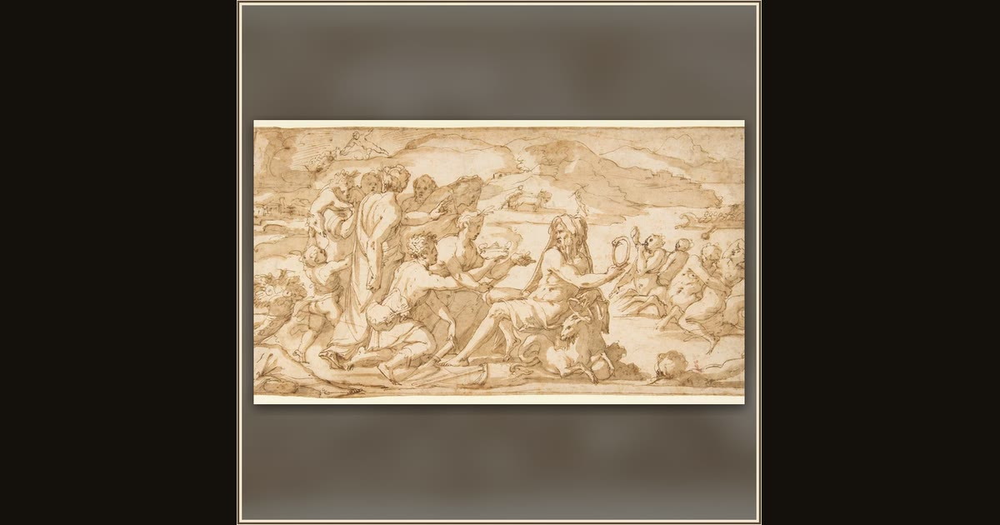

The First Fruits of the Earth Offered to Saturn
Giorgio Vasari · 1555–56 · met
Vasari shows figures presenting the earth’s first fruits to Saturn; the Athenian recalls the abundant, spontaneously growing provisions of the age of Cronos (713c). Explore its place in Plato's Dialogues, Laws · Book IV, section 47.